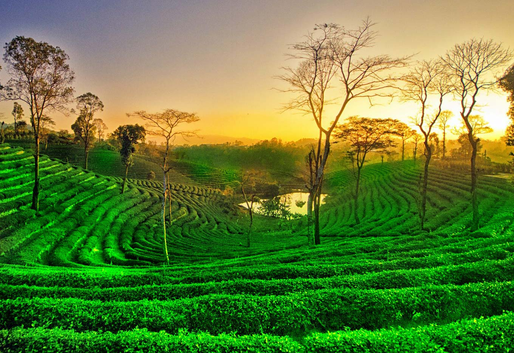

Assam is a state in northeastern India known for its wildlife, archeological sites and tea plantations. In the west, Guwahati, Assam’s largest city, features silk bazaars and the hilltop Kamakhya Temple. Umananda Temple sits on Peacock Island in the Brahmaputra river. The state capital, Dispur, is a suburb of Guwahati. The ancient pilgrimage site of Hajo and Madan Kamdev, the ruins of a temple complex, lie nearby.
for more information check out this site
Or you can watch this video